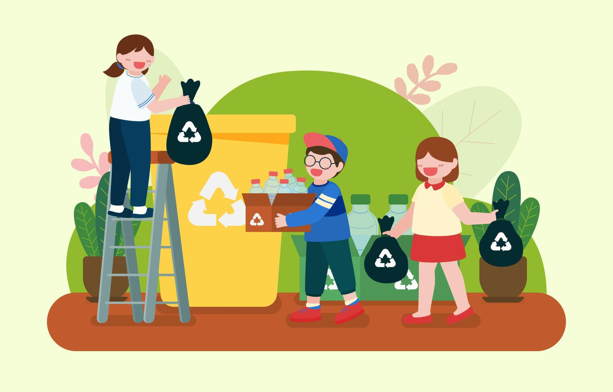
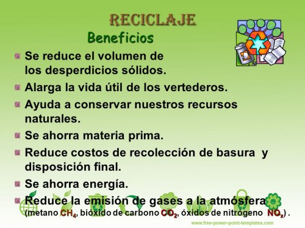
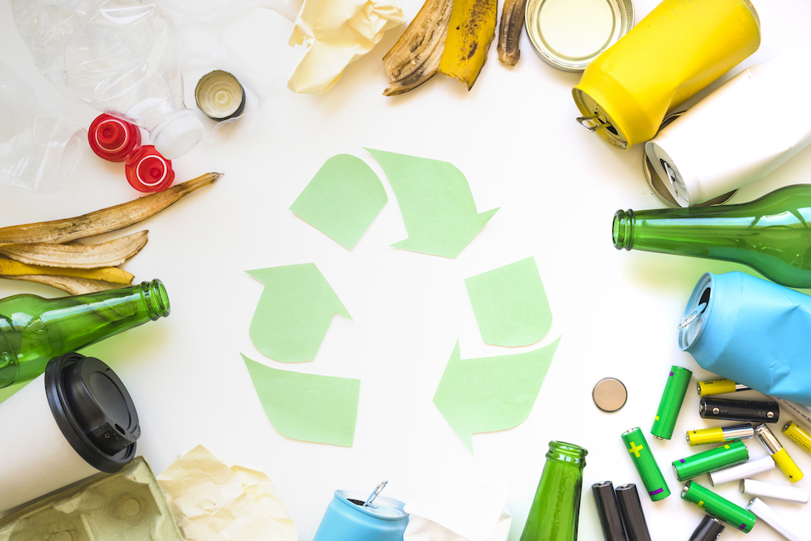
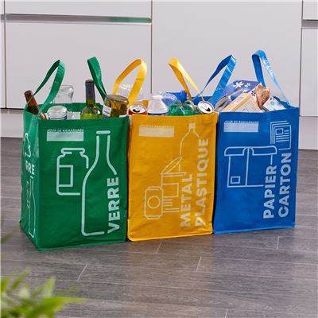

El reciclaje es el proceso de recolectar y procesar materiales que de otro modo serían desechados como basura. Al reciclar, se transforma el material en nuevos productos, lo que ayuda a reducir el consumo de recursos naturales.
 Leer MásReciclar tiene múltiples beneficios, como la reducción de residuos en vertederos, el ahorro de energía y la conservación de recursos naturales. Además, contribuye a la lucha contra el cambio climático.
 Leer MásLos materiales que se pueden reciclar incluyen papel, cartón, vidrio, plástico y metales. Es importante conocer cómo separar y clasificar estos materiales para facilitar su reciclaje.
 Leer MásReciclar en casa es sencillo. Puedes crear un sistema de separación de residuos, usar bolsas reutilizables y participar en programas de reciclaje comunitario. ¡Cada pequeño esfuerzo cuenta!
 Leer Más